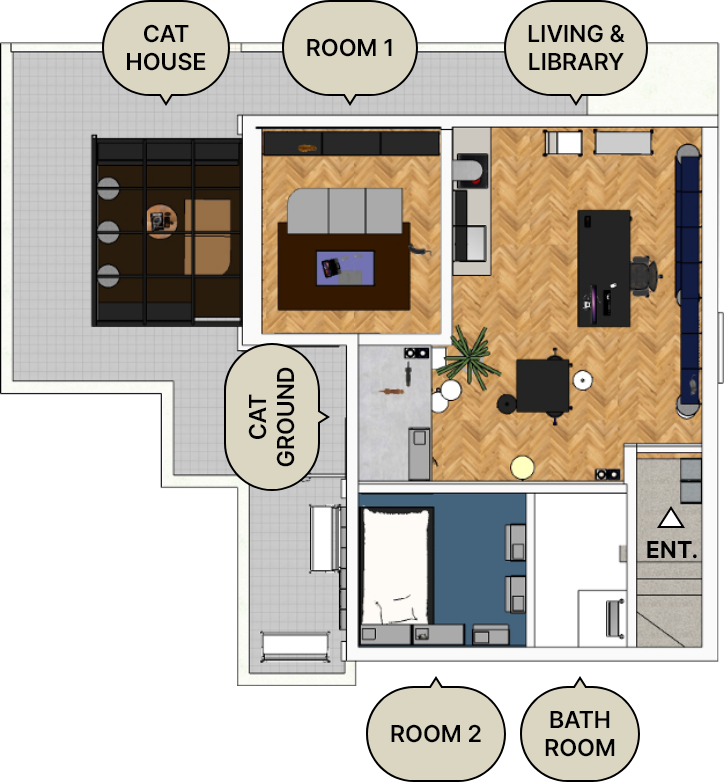

나응식의 묘집합

ABOUT
레어로우 하우스의 세 번째 입주자는 냥신으로도 불리는 거대고양이 나응식 수의사입니다.
소리에 반응하는 예민한 귀, 평상시에 보여지는 차분함, 새로운 것에 대한 호기심, 온전히 나만을 위한 숨숨집 같은 방까지…
그에게는 고양이와 일치하는 '묘집합'적인 요소가 많습니다.
거대한 고양이가 살고 있을 것 같은 이 공간에서 차분함 속에 숨겨진 의외의 디테일들을 찾아보세요.
고양이들처럼 그에게도 보이는 것과는 다른 다양한 취향이 있으니까요!
이번 ‘묘집합’ 을 통해 사람과 동물이 함께 머물 수 있는 공간에 대해 많은 영감을 얻어갈 수 있었으면 좋겠습니다.
FLOOR

집 안에서 모든 것들을 해결할 수 있는 집돌이의 레어로우 하우스!
미니멀리스트를 지향하지만 그저 맥시멀리스트인 그의 공간을 자세히 들여다보면 우리 모두가 좋아할만한 요소들로 가득합니다.
각각의 공간들은 고양이와 함께하는 상상 + 취미부자인 그의 로망까지 더한 파라다이스 같은 곳입니다.
우리는 ‘묘집합’을 통해 모든 집사가 꿈꾸는 공간을 제안합니다.